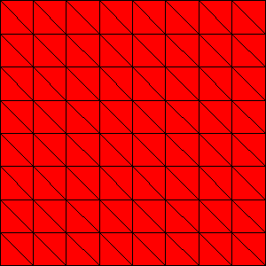
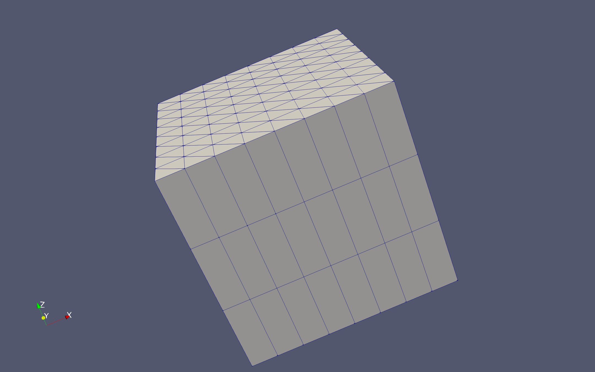
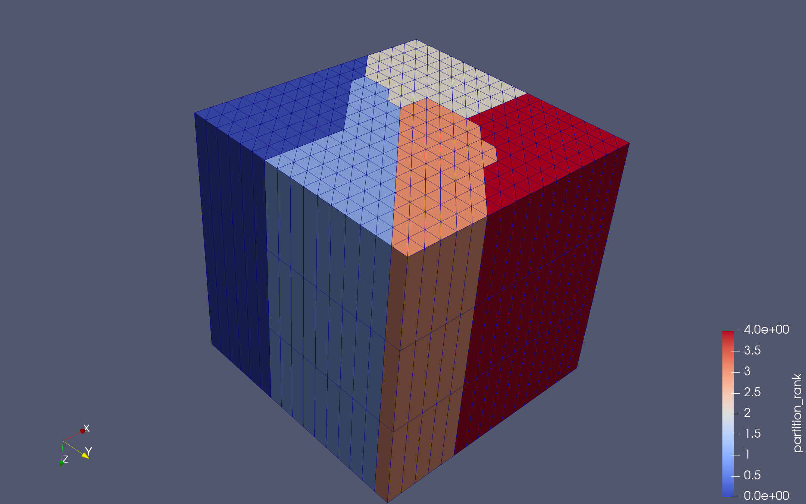
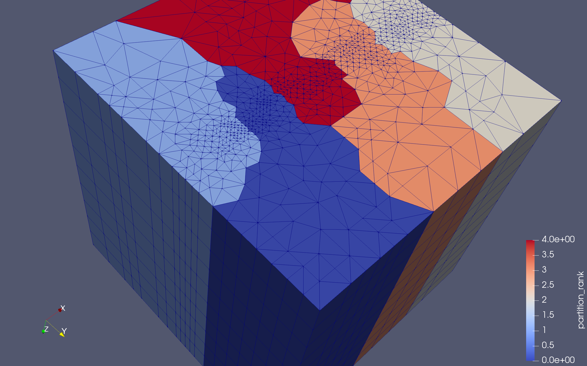

Meshing for Subsurface Flows in PETSc#
This tutorials guides users in creating meshes for the TDyCore simulation framework for subsurface flows. The user inputs a surface mesh, a refinement prescription, and an extrusion prescription in order to create the simulation mesh.
Reading the ASCII Output
For example, a very simple mesh would start with a square surface mesh divided into two triangles, which is then extruded to form two triangular prisms. This is the first test in the DMPlex tutorial code ex10,
$ make -f ./gmakefile test search="dm_impls_plex_tutorials-ex10_0"
which outputs
DM Object: Mesh 1 MPI process
type: plex
Mesh in 3 dimensions:
Number of 0-cells per rank: 8
Number of 1-cells per rank: 14 (4)
Number of 2-cells per rank: 9 (5)
Number of 3-cells per rank: 2
Labels:
celltype: 6 strata with value/size (0 (8), 1 (10), 2 (4), 3 (4), 5 (5), 9 (2))
depth: 4 strata with value/size (0 (8), 1 (14), 2 (9), 3 (2))
marker: 1 strata with value/size (1 (24))
Face Sets: 4 strata with value/size (1 (3), 2 (3), 3 (3), 4 (3))
We can see that there are two 3-cells, meaning three-dimensional cells, and from the celltype label we see that those cells have celltype 9, meaning they are triangular prisms. The original surface mesh had 5 edges, so we would expect 10 edges for the two surfaces and four edges connecting those surfaces. This is exactly what we see, since there are 14 1-cells, but 4 of them noted in parentheses are tensor cells created by extrusion. We can see this another way in the celltype label, where there are ten mesh points of type 1, meaning segments, and four mesh points of type 2, meaning tensor products of a vertex and segment. Similarly, there are 9 2-cells, but 5 of them stretch between the two surfaces, meaning they are tensor products of two segments.
Regular Refinement of Simplex Meshes
We can regularly refine the surface before extrusion using -dm_refine <k>, where k is the number of refinements,
$ make -f ./gmakefile test search="dm_impls_plex_tutorials-ex10_1" EXTRA_OPTIONS="-srf_dm_refine 2 -srf_dm_view draw -draw_save $PETSC_DIR/surface.png -draw_save_single_file"
which produces the following surface

Fig. 31 Surface mesh refined twice#
and the extruded mesh can be visualized using VTK. Here I make the image using Paraview, and give the extrusion 3 layers
$ make -f ./gmakefile test search="dm_impls_plex_tutorials-ex10_1" EXTRA_OPTIONS="-dm_view hdf5:$PETSC_DIR/mesh.h5 -dm_extrude 3"
$ $PETSC_DIR/lib/petsc/bin/petsc_gen_xmdf.py mesh.h5

Fig. 32 Extruded mesh with refined surface#
We can similarly look at this in parallel. Test 2 uses three refinements and three extrusion layers on five processes
$ make -f ./gmakefile test search="dm_impls_plex_tutorials-ex10_2" EXTRA_OPTIONS="-dm_view hdf5:$PETSC_DIR/mesh.h5 -dm_partition_view -petscpartitioner_type parmetis"
$ $PETSC_DIR/lib/petsc/bin/petsc_gen_xmdf.py mesh.h5

Fig. 33 Parallel extruded mesh with refined surface#
Adaptive Refinement of Simplex Meshes
Adaptive refinement of simplicial meshes is somewhat tricky when we demand that the meshes be conforming, as we do in this case. We would like different grid cells to have different levels of refinement, for example headwaters cells in a watershed be refined twice, while river channel cells be refined four times. In order to differentiate between cells, we first mark the cells on the surface using a DMLabel. We can do this programmatically,
static PetscErrorCode CreateDomainLabel(DM dm)
{
DMLabel label;
PetscInt cStart, cEnd, c;
PetscFunctionBeginUser;
PetscCall(DMGetCoordinatesLocalSetUp(dm));
PetscCall(DMCreateLabel(dm, "Cell Sets"));
PetscCall(DMGetLabel(dm, "Cell Sets", &label));
PetscCall(DMPlexGetHeightStratum(dm, 0, &cStart, &cEnd));
for (c = cStart; c < cEnd; ++c) {
PetscReal centroid[3], volume, x, y;
PetscCall(DMPlexComputeCellGeometryFVM(dm, c, &volume, centroid, NULL));
x = centroid[0];
y = centroid[1];
/* Headwaters are (0.0,0.25)--(0.1,0.75) */
if (x >= 0.0 && x < 0.1 && y >= 0.25 && y <= 0.75) {
PetscCall(DMLabelSetValue(label, c, 1));
continue;
}
/* River channel is (0.1,0.45)--(1.0,0.55) */
if (x >= 0.1 && x <= 1.0 && y >= 0.45 && y <= 0.55) {
PetscCall(DMLabelSetValue(label, c, 2));
continue;
}
}
PetscFunctionReturn(PETSC_SUCCESS);
}
or you can label the mesh using a GUI, such as GMsh, and PETSc will read the label values from the input file.
We next create a label marking each cell in the mesh with an action, such as DM_ADAPT_REFINE or DM_ADAPT_COARSEN. We do this based on a volume constraint, namely that cells with a certain label value should have a certain volume. You could, of course, choose a more complex strategy, but here we just want a clear criterion. We can give volume constraints for label value v using the command line argument -volume_constraint_<v> <vol>. The mesh is then refined iteratively, checking the volume constraints each time,
while (adapt) {
DM dmAdapt;
DMLabel adaptLabel;
PetscInt nAdaptLoc[2], nAdapt[2];
adapt = PETSC_FALSE;
nAdaptLoc[0] = nAdaptLoc[1] = 0;
nAdapt[0] = nAdapt[1] = 0;
/* Adaptation is not preserving the domain label */
PetscCall(DMHasLabel(dmCur, "Cell Sets", &hasLabel));
if (!hasLabel) PetscCall(CreateDomainLabel(dmCur));
PetscCall(DMGetLabel(dmCur, "Cell Sets", &label));
PetscCall(DMLabelGetValueIS(label, &vIS));
PetscCall(ISDuplicate(vIS, &valueIS));
PetscCall(ISDestroy(&vIS));
/* Sorting directly the label's value IS would corrupt the label so we duplicate the IS first */
PetscCall(ISSort(valueIS));
PetscCall(ISGetLocalSize(valueIS, &Nv));
PetscCall(ISGetIndices(valueIS, &values));
/* Construct adaptation label */
PetscCall(DMLabelCreate(PETSC_COMM_SELF, "adapt", &adaptLabel));
PetscCall(DMPlexGetHeightStratum(dmCur, 0, &cStart, &cEnd));
for (c = cStart; c < cEnd; ++c) {
PetscReal volume, centroid[3];
PetscInt value, vidx;
PetscCall(DMPlexComputeCellGeometryFVM(dmCur, c, &volume, centroid, NULL));
PetscCall(DMLabelGetValue(label, c, &value));
if (value < 0) continue;
PetscCall(PetscFindInt(value, Nv, values, &vidx));
PetscCheck(vidx >= 0, PETSC_COMM_SELF, PETSC_ERR_ARG_OUTOFRANGE, "Value %" PetscInt_FMT " for cell %" PetscInt_FMT " does not exist in label", value, c);
if (volume > volConst[vidx]) {
PetscCall(DMLabelSetValue(adaptLabel, c, DM_ADAPT_REFINE));
++nAdaptLoc[0];
}
if (volume < volConst[vidx] * ratio) {
PetscCall(DMLabelSetValue(adaptLabel, c, DM_ADAPT_COARSEN));
++nAdaptLoc[1];
}
}
PetscCall(ISRestoreIndices(valueIS, &values));
PetscCall(ISDestroy(&valueIS));
PetscCallMPI(MPIU_Allreduce(&nAdaptLoc, &nAdapt, 2, MPIU_INT, MPI_SUM, PetscObjectComm((PetscObject)dmCur)));
if (nAdapt[0]) {
PetscCall(PetscInfo(dmCur, "Adapted mesh, marking %" PetscInt_FMT " cells for refinement, and %" PetscInt_FMT " cells for coarsening\n", nAdapt[0], nAdapt[1]));
PetscCall(DMAdaptLabel(dmCur, adaptLabel, &dmAdapt));
PetscCall(DMDestroy(&dmCur));
PetscCall(DMViewFromOptions(dmAdapt, NULL, "-adapt_dm_view"));
dmCur = dmAdapt;
adapt = PETSC_TRUE;
}
PetscCall(DMLabelDestroy(&adaptLabel));
}
Test 3 from ex10 constrains the headwater cells (with marker 1) to have volume less than 0.01, and the river channel cells (with marker 2) to be smaller than 0.000625
suffix: 3
requires: triangle
args: -init_dm_plex_dim 2 -init_dm_plex_box_faces 5,5 -adapt -volume_constraint_1 0.01 -volume_constraint_2 0.000625 -dm_extrude 10
We can look at a parallel run using extra options for the test system
$ make -f ./gmakefile test search="dm_impls_plex_tutorials-ex10_3" EXTRA_OPTIONS="-dm_view hdf5:$PETSC_DIR/mesh.h5 -dm_partition_view -petscpartitioner_type parmetis" NP=5
$ $PETSC_DIR/lib/petsc/bin/petsc_gen_xmdf.py mesh.h5

Fig. 34 Parallel extruded mesh with adaptively refined surface#
By turning on PetscInfo, we can see what decisions the refiner is making
$ make -f ./gmakefile test search="dm_impls_plex_tutorials-ex10_3" EXTRA_OPTIONS="-info :dm"
# > [0] AdaptMesh(): Adapted mesh, marking 12 cells for refinement, and 0 cells for coarsening
# > [0] AdaptMesh(): Adapted mesh, marking 29 cells for refinement, and 0 cells for coarsening
# > [0] AdaptMesh(): Adapted mesh, marking 84 cells for refinement, and 0 cells for coarsening
# > [0] AdaptMesh(): Adapted mesh, marking 10 cells for refinement, and 0 cells for coarsening